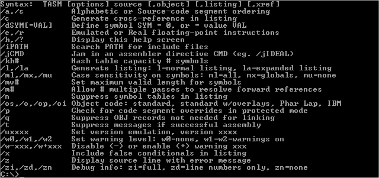
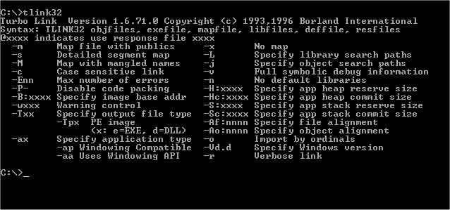

Faire un patcheur en Assembleur Win32.
Dans le precedent Memento nous a vue comment faire son patcheur en Delphi mais aussi en Assembleur. Dans ce tut nous allons voir comment faire son patcheur en Assembleur mais 32bits sous Windows (Win32Asm).
Préface :
Déjà on pourrais se dire
pourquoi choisit on l'asm comme language alors qu'il en existe
d'autre plus évolué.
En faite l'asm est un language tres rapide, compacte et
contrairement aux idées reçu pas si compliqué que ca. Mais
j'ai deja cité tous les aventages dans le numéro precedant.
Du source, donnez moi du source :
Pour faire simple et conci nous
allons directement voir une partie du source et comment sa mise
en oeuvre fonctionne. Ce code est assé ancien et j'ai juste
ajouter plus de commentaires, il se peut aussi qu'il ne soit pas
optimisé à fond (certaines astuces ne marches pas sous NT) et
en plus il date, en attendant un nouveaux super patcheur et en
preparation dans nos labos ;)
Comme d'habitude tout ce qui est en rouge et jaune est modifable
pour la configuration du patcheur. Editez ce code sous des progs
comme Notepad ou Edit, c'est preferable :
.386P Locals Jumps include Wpatcheur32.inc ; include .Model Flat, StdCall .Data ;[SC]Patcher v1.2 ;/////////////////////////////////// Zone à modifier ////////////////////////////////////////// Nick equ " Static REvenge " ; Ton nick (respecte l'espace entre chaque guillement) Nom_du_prog equ " SuperProg v2.0 " ; Le nom du prog cracké Type_de_patch equ " Kill time limit! " ; Met ici ce que fait ton patch Fichier equ "xns3.exe" taille equ 1610240 ; taille de la cible en octets nb_blocs equ 11 ; nombre de blocs patch_ptr0 equ 0EB6D0h, 0EB6EDh, 0EB944h ; adresse hexa new_val0 equ 0EBh, 0EBh, 005h, 000h ; nouvelles valeurs long_bloc0 equ 1, 2, 1 ; longueures des chaines about db "------------------------= Infos =-------------------------",13,10,13,10 db " cONTACT : static_revenge@shmeitcorp.org",13,10 db " wEBsITE : http://www.shmeitcorp.org ",13,10 db " GrEeTiNGz : All members from Shmeit Corp !",13,10,13,10 db "----=[Coded in Win32ASM by Static REvenge]=----",0 ; laissez-le si ca vous dis :)
Le code complet et commenté se
trouve ici. Maintenant on vas revoir quelques points
dans l'ordre :
- Le fichier Wpatcheur32.inc est in fichier include, cela veux
dire qu'il fait partis du programme mais je l'ai mis à par pour
que le tout soit plus lisible. Il contient les procedures et
autres adresses hexa utilisées par le patcheur (interruptions, evenements, etc..), le compilateur
en a besoin pour savoir ce qu'il doit linker
- Le "equ" indique une equivalance, on pourrait
tres bien aussi le remplacer par l'opperateur "=",
c'est une question de gouts.
Ensuite il y à quelques signes à
connaitre comme :
- db qui signifie Declare Byte, il sert à reserver des octets
avec des caracteres alphanumeriques (1,2,3, a,b,c,..)
- dd signifie Declare Double Dword, declaration d'un double mot
long soit 32bits
- dw signifie Declare Word, on declare juste un mot
Pour ce qui est des instructions et de la synthaxe ca risque d'être long vu qu'il en existe des pres d'une centaine, donc je vous recommande toujours le même bouquin! A savoir "Assembleur", de Bernard Fabrot aux éditions Marabout, ca coute à peine 50 balles et c'est tres complet, en plus il viens d'être réedité! :)
La compilation :
Une fois un programme écrit, il
faut le compiler pour le rendre executable. Il existe des compilateurs de toutes sortes
mais leurs principes restes les mêmes : compiler (trop fort).
Ici j'ai utiliser Tasm (comme dans le M#3) car il est rapide dans
la compilatio net fourni aussi des projet rapides d'executions
une fois compilé. De plus avec Tasm on programme vraiment en
assembleur contrairementà Masm qui ressemble plus à du basic
(je zap le debat).
Pour compiler sous Tasm il faut le compilateur et le fichier Make. Ce fichir va servir à automatiser la compilation du projet car nous aurons ecrit tous les parametres au prealable. Notre fichier make est comme ca :
@echo off
build\tasm32
/ml /m3 /z patch
build\brcc32
patcheur
build\tlink32
-x /Tpe /aa /c /V4.0 /o patch,patch,, build\import32.lib,,patch
del *.obj
Dans le repertoire
"bluid" doivent se trouver les fichiers pour la
compilation 32bits qui se trouves ici
ou sur le site dans la partie Coding.
Pour connaitre les utilités des arguments, il suffit d'executer
tasm32.exe et tlink32.exe ce qui donne ca :

tasm32.exe

tlink32.exe
On peut voir qu'il y
à pas mal d'options possible, même de linker des fichiers
ressources au format .res.
Cette options est pas mal du tout car editer un fichier ressource
de ce format est à la portée de pas mal de monde, tout est
visuel et une interface est faite en quelqeus minutes. Ensuite il
suffit d'assigner une adresse à chaque element qui serat
fonctionnel et les programmer.
Par exemple dans le patcheur, le bouton Patch a l'addresse 1003
que l'on ecrit en egualité avec un nom de son choix pour faire
une correspondance lisible :
- Dans Wpatcheur32.inc => IDD_OPEN equ 1003
- Dans patch.asm => cmp [wparam], IDD_OPEN ; Patch iD
Et ainsi de suite
pour tous les composants de la resource.
Pour editer cette ressource, il vous un editeur de ressource
(vraiment trop fort) de bonne qualité de preference. Le plus
utilisé est Visual C/C++ mais il existe aussi l'editeur officiel
pour de Borland qui est Borland Resource Workshop 4.5, un peut
vieillot mais efficace.
Et bien voilà, je
suis assis devant mon pc et j'ai pas trop d'idée pour faire la
suite du tut alors je vais m' arreter là, mais j'ai quelques
conseils à vous donner avant si vous voulez vous lancer dans la
prog asm :
- Achetez le fameux bouquin
- Essayez de comprendre le fonctionnement du patcheur
- Prenez votre temps
- Faites un plan d'un programme que vous penssez à coder
avant de le faire
- N'esitez pas à partager les fichiers et à créer vos propres
routines independament des autres fichiers pour pouvoir les
recycler facilement par la suite
- Soyez relax quans vous codez ;)
- Si vous pouvez, codez sous NT car il est beaucoup plus rigoureux
sur le code, ainsi vos programmes seront bien plus propres
- Et tres important, structurez vos programmes histoire que ca ne
finisse pas en plat de spaghettis!
Et amusez vous bien!!!
I'm just a AsM lover and you?